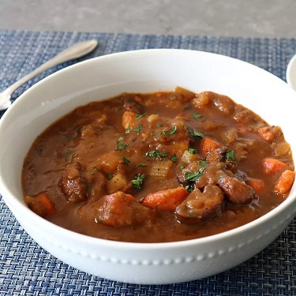

Got No Beef Stew

Description
Got No Beef Stew – Where's the Beef? Not Here
I like to joke about not knowing current food prices, since I have a corporate expense account, but as
inflation continues to rage, people aren't finding that type of humor as funny as they used to. Maybe they
never did, but the point is even a kept man such as myself realizes that the price of meat at the market
these days is very high, and that was the inspiration for this beefless beef stew.
I love a nice chunk of succulent, tender beef as much as the next guy, but that's not the only reason I love
a good stew. For me, the potatoes and gravy are almost as enjoyable, which is why this low-budget
alternative was still a wonderful thing to eat, especially if you splurge, and get a high-quality beef
bouillon base, and/or beef bone broth. I used the "Better Than Bouillon" brand, which does a very nice job.
Besides using top-quality, non-beef ingredients, we'll also need to brown our mushrooms and onions very well
if we want a nice deep flavor, as well as an authentic looking stew-like color. That might be just as
important as anything else, since no matter how great yours tastes, no one want to sit down to eat a bowl of
beige stew. I enjoy a very basic array of ingredients in these types of dishes, but anything you like in
your regular beef stew will work here. But no matter what additions you decide to include, I really hope you
give this a try soon. Enjoy!
Ingredients
- 2 tablespoons vegetable oil
- 2 tablespoons unsalted butter
- 1 pound brown mushrooms, halved
- 4 carrots, peeled and cut into 1-inch pieces
- 1 large bay leaf
- 1 teaspoon garlic powder
- 7 cups water
- 1 tablespoon tomato paste
- 1 large yellow onion, diced
Steps
- Combine butter and vegetable oil in a pot over medium-high heat and allow butter to melt. Toss in
mushrooms and season salt. Cook, stirring occasionally until mushrooms are nicely browned, 5 to 6
minutes.
-
Add onions and lower heat to medium. Cook, stirring, until onions have softened and are translucent and
the bottom of the pot has turned brown, about 5 minutes. The browned bits on the bottom of the pot will
add flavor and color. Add tomato paste and flour to thicken the stew. Cook and stir for 2 to 3 minutes.
- Pour in water, increase temperature to high, and bring to a simmer. While you're waiting for stew to
come to a simmer, mix in miso paste, beef paste, bay leaf, Worcestershire sauce, garlic powder, black
pepper, thyme, rosemary, and cayenne; stir to combine.
- Once stew is bubbling, add carrots, and celery and reduce heat to medium-low to keep stew at a steady
simmer, stirring occasionally, about 30 minutes. Taste and season with salt if necessary. Add potatoes
and simmer until potatoes are very tender and creamy inside and stew has reduced and thickened, about 30
more minutes. Potatoes can be stirred in and broken up a bit to make the stew thicker.
- Turn off the heat and stir in freshly chopped Italian parsley if desired.